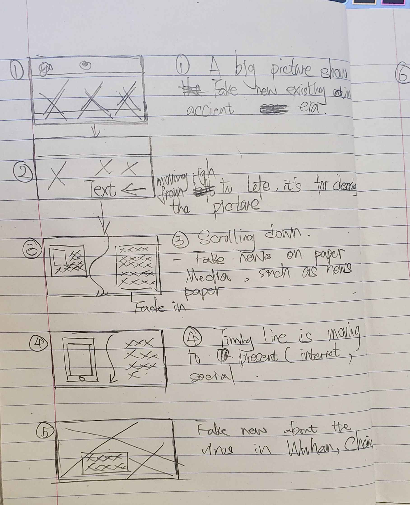
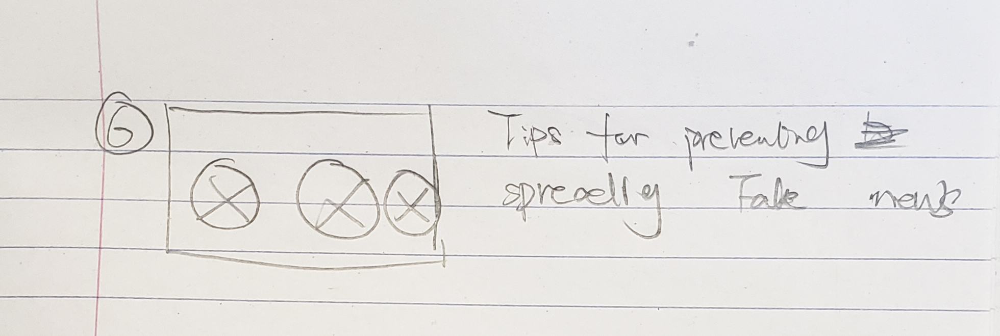

Paper Prototype
 I decided to use a timeline to make connections which show fake news is ever changing from ancient era to present. The advantage of the timeline is that it makes the audience feel that they are reading the history of fake news. I will use fade in text and picture to make the reading experience better.
At the end of the page, I will also give tips to the viewer because this is the purpose of building this page. Simple layer but I will add more content after I finish the idea for now.